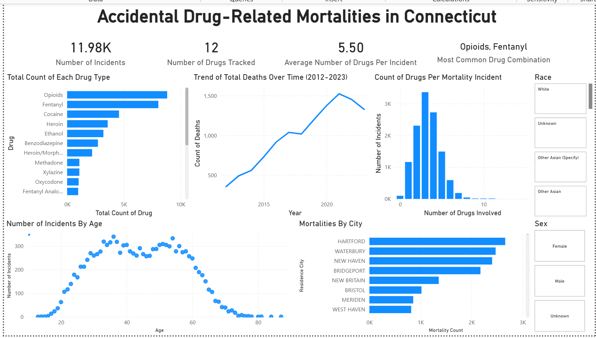

Predicting Controllable Flight Delays
Compared decision tree, random forest, logistic regression and XGBoost models, worked through class imbalance and used SHAP to interpret the final model.


TECHNICAL PROJECTS + TOOLS
Selected Work tells the story behind my strongest projects. This page is the more technical side: full Python notebooks, model outputs, Power BI and Tableau files, and additional examples of how I have used different tools.
PYTHON + MACHINE LEARNING
These projects include the original notebooks with code, outputs and model diagnostics. Selected results are shown here for a quick review, with the complete notebooks available for a closer look.
Compared decision tree, random forest, logistic regression and XGBoost models, worked through class imbalance and used SHAP to interpret the final model.
Worked with more than 173,000 shelter records, created analytical breed categories, explored adoption patterns and built a logistic regression model for adoption outcomes.


The model evaluation was about 74.9% accuracy, 83.6% recall and an F1 score of 0.77. The full notebook also shows the cleaning, exploratory analysis, feature creation, coefficient table and odds ratios rather than only the final model.
DATA VISUALIZATION
I enjoy making big, complicated datasets easier for someone else to explore. These projects include complete dashboards, data stories and earlier visualization exercises.
I combined maps, crossing trends over time, port rankings and summary figures into an interactive dashboard. A parameter lets viewers switch between ports and states, and the dashboard interactions help narrow down a much larger dataset.
Of my Tableau projects, this is the clearest example of creating a complete user-facing dashboard rather than separate charts on different tabs.
This Tableau Story compares traffic incidents and delays in Pennsylvania with other Northeastern states. I organized weather and visibility comparisons, maps and delay charts into three parts: where Pennsylvania stands, which conditions accompany longer delays, and what the rain-and-mist patterns may be worth exploring further.
I wanted the analysis to unfold in a useful order, rather than asking someone to make sense of more than 20 individual worksheets. These are descriptive patterns, not proof that a particular weather condition caused the differences.
My group explored accidental drug-related deaths in Connecticut from 2012 to 2023 using Power BI and a three-part Tableau story. We looked at trends over time, substances found in the data, and demographic patterns. I learned how important careful labels are with public-health data: one death can involve multiple substances.
Both story files belong to the same group project. The revised version has clearer titles and removes the misplaced callout.

These Tableau views explore patient outcomes, physician satisfaction, revenue, insurance margins and demographic comparisons. I tried multiple chart types while finding ways to communicate each question. It's a collection of analytical worksheets, not a finished combined dashboard.
The original portfolio export and expanded worksheet collection are two versions of the same project, not separate case studies.
I started with a class prototype and kept developing it because I wanted a better way to understand changes in daily pet care. The newer app brings together customizable trackers, history, schedules and trends. I used AI coding tools extensively; my work has focused on the product decisions, interface, testing and iterations.
A separate, read-only preview lets visitors look through fictional sample screens without an account or access to real pet data.
MORE TECHNICAL WORK
These projects show other parts of my toolkit without repeating the full case studies.
I started with a facility-level question, extracted SAMHSA tables from PDF using Excel Get Data, evaluated the source limitations and investigated North Carolina sources when state-level aggregation could not answer the original question.
Customizable health tracking, trend comparisons, event history and pattern detection concepts built around pet care information I actually wanted to organize.
See wireframes and prototype →RESEARCH SYNTHESISInterdisciplinary literature synthesis and conceptual modeling across forensic accounting, psychology, behavioral ethics and criminology.
See research poster →EXPERIMENTAL RESEARCHRepeated measurement, operational definitions, a single-subject AB design and real behavioral data from a 34-day study.
See graphs, presentation and manuscript →THE STORIES BEHIND THE WORK
Selected Work explains why I chose the questions, how I made decisions and what I took away from the results.